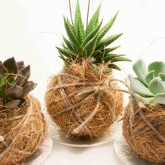
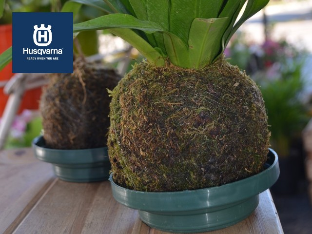

¡Bienvenidos a esta presentación sobre la implementación de Kokedama con sustrato de coco! En esta sesión, exploraremos la fascinante técnica de crear hermosas esferas de plantas sin macetas, utilizando como base un sustrato natural y sostenible: el coco. Descubriremos los beneficios de esta técnica, aprenderemos cómo realizarla paso a paso y exploraremos algunas recomendaciones importantes. ¡Prepárate para sumergirte en el mundo verde y creativo de los Kokedamas con sustrato de coco!Descubre la belleza de los Kokedamas con sustrato de coco! En esta presentación te mostraremos cómo implementar esta técnica única y creativa.

Beneficios
beneficio 1: Sustrato sostenible: El sustrato de coco es una alternativa ecológica y sostenible a otros sustratos. Se obtiene de la fibra de coco, un subproducto de la industria del coco, lo que lo convierte en una opción respetuosa con el medio ambiente.
beneficio 2: Retención de humedad: El sustrato de coco tiene una excelente capacidad de retención de agua, lo que ayuda a mantener un nivel adecuado de humedad para las plantas en los Kokedamas. Esto permite un riego menos frecuente y evita el encharcamiento.
beneficio 3: Aireación del sistema radicular: El sustrato de coco proporciona una buena aireación al sistema radicular de las plantas. Esto favorece un desarrollo saludable de las raíces y evita problemas como la pudrición radicular.

Riesgos
riesgo 1: Descomposición del sustrato: El sustrato de coco puede descomponerse con el tiempo, especialmente si se expone constantemente a la humedad. Esto puede afectar negativamente la salud de las plantas y requerir reemplazo o renovación periódica del sustrato.
riesgo 2: Drenaje insuficiente: Aunque el sustrato de coco retiene bien la humedad, puede tener un drenaje deficiente si no se crea una estructura adecuada alrededor del kokedama. El exceso de agua puede provocar el desarrollo de enfermedades fúngicas o pudrición radicular.
riesgo 3: Posible presencia de sales y minerales: El sustrato de coco puede contener sales y minerales en niveles variables dependiendo del proceso de producción. Estos elementos pueden acumularse en el sustrato con el tiempo y afectar la absorción de nutrientes por parte de las plantas.